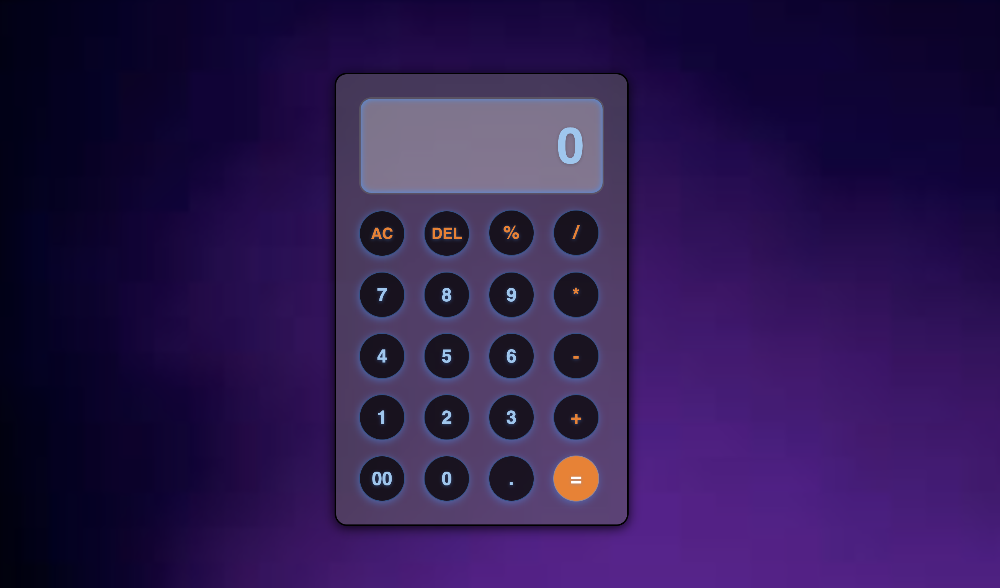
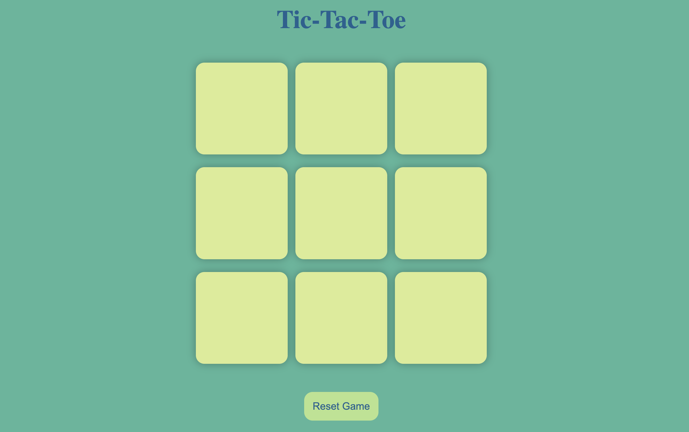
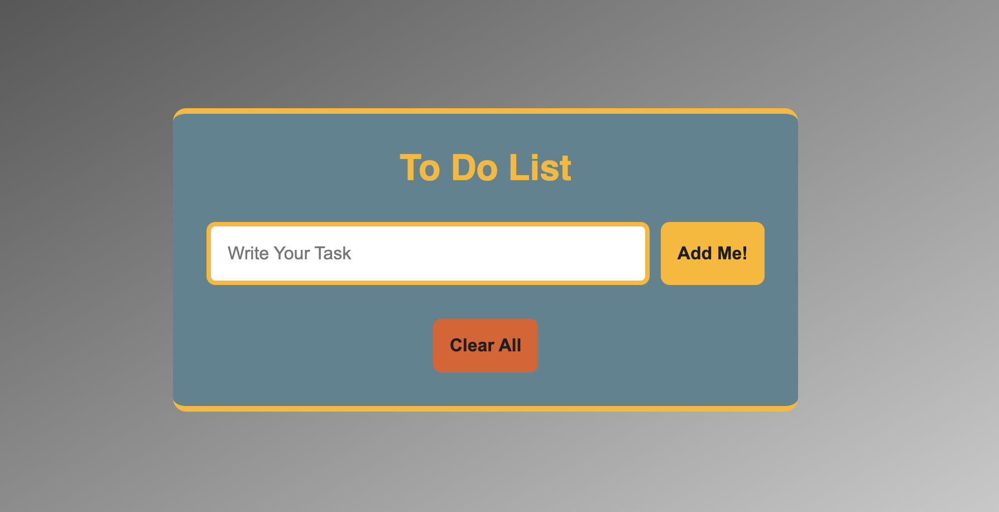

My Projects
1. Calculator
A calculator project implemented using HTML, CSS, and JavaScript provides a functional and interactive web-based tool for performing basic arithmetic operations.
2. Tic-Tac-Toe Game
A Tic-Tac-Toe game project developed using HTML, CSS, and JavaScript provides a classic two-player game experience within a web browser.
3. To-Do-List App
The To-Do List Project is a web-based application designed to help users manage and organize their daily tasks. This project leverages the core web technologies of HTML, CSS, and JavaScript to deliver a functional and interactive user experience.
